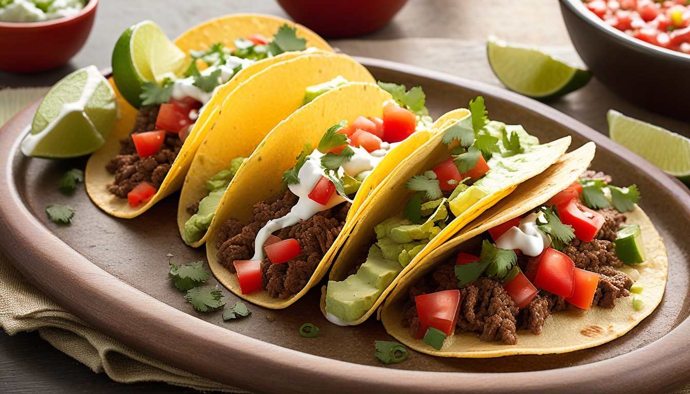
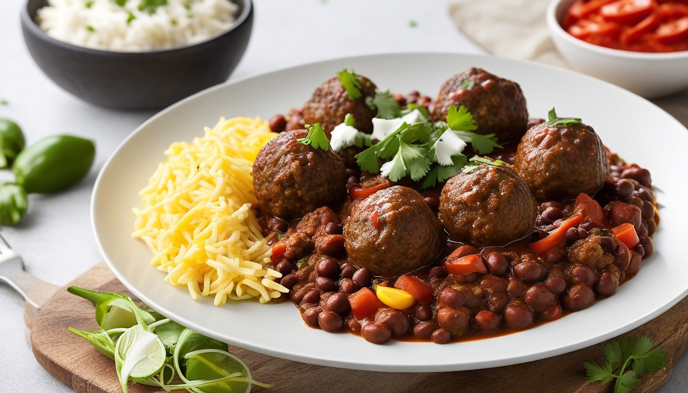
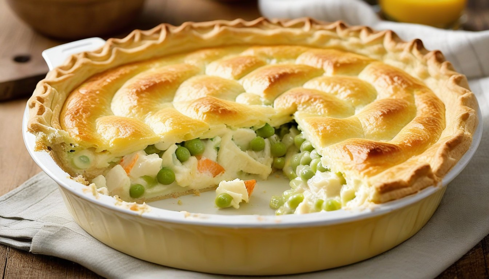
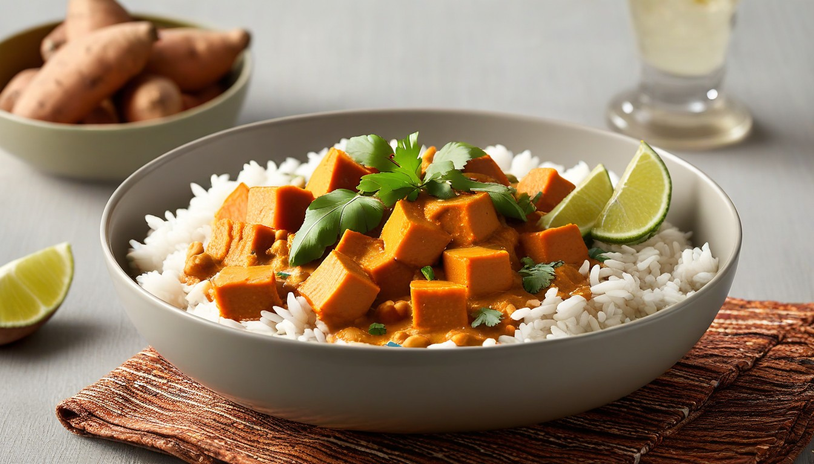

Ingredients
1 large onion, roughly chopped1 thumb-sized piece ginger, peeled and grated
2 large garlic cloves
1 tbsp rapeseed oil
2-3 tbsp tikka curry paste
400g can chopped tomatoes
2 tbsp tomato purée
½ tbsp light brown soft sugar
3 cardamom pods, bashed
200g brown basmati rice
3 tbsp ground almonds
300g raw king prawns
1 tbsp double cream
Method
Place onion, ginger, and garlic in a food processor; blitz into a smooth paste. Heat oil in a large flameproof casserole dish or pan over medium heat. Add the onion paste; fry for 8 mins until lightly golden. Stir in curry paste; fry for 1 min more. Add tomatoes, tomato purée, sugar, and cardamom pods. Simmer covered for 10 mins. Cook rice following pack instructions. Remove cardamom pods from the curry sauce, discard, then blend with a hand blender or in a clean food processor. Return to the pan, add almonds and prawns; cook for 5 mins. Season, stir in cream and coriander. Serve with rice and optional naan breads.
Ingredients
250g unsalted butter, cubed, plus extra for the tin250g dark chocolate, roughly chopped
4 large eggs
300g golden caster sugar
½ tsp vanilla extract or paste
100g gluten-free plain flour, sieved
60g cocoa powder
½ tsp fine sea salt
150g milk chocolate, roughly cut into chunks
Method
Preheat the oven to 180C/160C fan/gas 4. Butter a 30cm x 20cm non-stick tin, line the base with non-stick baking parchment. Fill a saucepan one-third full with water, bring to a simmer, and place a heatproof bowl on top. Gently melt butter and chocolate over low heat, stirring occasionally. Avoid letting it catch and burn. Remove from heat and let it cool slightly. Beat eggs and sugar with an electric whisk for 8-10 mins until thick enough to leave a trail. Gently fold in the cooled melted chocolate and vanilla, followed by flour, cocoa, and salt. Finally, fold in chocolate chunks. Pour the brownie batter into the lined tin, bake in the center of the oven for 30-35 mins. Let it cool a bit in the tin before cutting into 12 squares.
Ingredients
5 small ripe bananas (4 mashed, 1 sliced down the middle to decorate the top)150g gluten-free self-raising flour
100g gluten-free oats
50g ground almonds
1 tsp gluten-free baking powder
1 tsp cinnamon
90g dark brown sugar
90g caster sugar
100g butter, melted
2 large eggs, beaten
1 tbsp icing sugar
Method
Preheat the oven to 180C/160C fan/gas 4 and line a 900g loaf tin with parchment paper (19 x 9 x 6cm). In a large bowl, combine all ingredients, excluding the sliced banana, 1 tbsp caster sugar, and icing sugar. Stir until smooth. Pour into the tin and place the two remaining banana halves cut-side up on top of the batter, pressing down slightly. Sprinkle with caster sugar. Bake for 1hr-1hr 15 mins until a skewer comes out clean, covering with foil toward the end if it browns too much. Dust with icing sugar and let it cool.
Ingredients
175g gluten-free flour85g chilled butter, coarsely grated
50g mature cheddar, grated
1 tsp coarse grain mustard
For the filling
25g butter2 tbsp sunflower oil
500g skinless boneless chicken breasts, cut in chunks
2 leeks, thickly sliced
350ml hot chicken stock
1 tbsp gluten-free flour
85g watercress, chopped
4 tbsp crème fraîche
1 tbsp milk for glazing
Method
In a bowl, combine flour, a pinch of salt, and butter, then mix in cheese. Blend 2 tbsp cold water with mustard and stir into the mixture to form a dough. Wrap and chill for 30 mins. In a pan, heat butter and oil; fry chicken until golden. Add leeks; sauté until softened. Pour in stock, bring to a boil, cover, and simmer for 15 mins. Preheat oven to 200C/180C fan/gas 6. Transfer chicken and leeks to a 1.2-litre pie dish. Mix flour and 1 tbsp cold water to a paste, thin with 2 tbsp stock, then add to the pan. Stir until thickened. Off heat, add watercress and crème fraîche, season, and pour over chicken and leeks. Roll out pastry, place over filling, trim, make a hole, brush with milk, and bake for 25-30 mins until golden.

500g beef mince
300ml beef stock
1 tbsp coriander seeds
1 tsp black peppercorns
1 tsp chipotle chilli flakes
1 tbsp paprika
1 tbsp dried oregano
1 tsp garlic granules
1 tsp onion granules
2 tsp cornflour
Ingredients
1 tbsp sunflower oil500g beef mince
300ml beef stock
For the spice mix
2 tbsp cumin seeds1 tbsp coriander seeds
1 tsp black peppercorns
1 tsp chipotle chilli flakes
1 tbsp paprika
1 tbsp dried oregano
1 tsp garlic granules
1 tsp onion granules
2 tsp cornflour
Method
Begin by preparing the spice mix. Toast cumin seeds, coriander seeds, and peppercorns in a dry frying pan. Add remaining spice mix ingredients, excluding cornflour, and grind. Stir in cornflour. For pickled onions, toss onions with lime juice and salt, allowing them to soften. In a frying pan crumble in the mince. Cook for 15-20 mins, stirring occasionally. Sprinkle half the spice mix, cook for 2 mins. To assemble tacos, toast tortillas and place them on a serving plate. Spoon the mince into a bowl and serve other ingredients separately for assembly or directly spoon mince into tortillas, topping with avocado, tomato, cheese (if using), pickled onions, and crushed tortilla chips. Serve lime wedges on the side for squeezing over.

12 beef meatballs
1 onion, finely sliced
2 mixed peppers, sliced
½ large bunch coriander, leaves and stalks chopped
2 large garlic cloves, crushed
1 tsp hot smoked paprika
2 tsp ground cumin
1 heaped tbsp light brown soft sugar
2 x 400g cans chopped tomatoes
2 x 400g cans black beans, drained and rinsed
cooked rice, to serve
Ingredients
2 tbsp olive oil12 beef meatballs
1 onion, finely sliced
2 mixed peppers, sliced
½ large bunch coriander, leaves and stalks chopped
2 large garlic cloves, crushed
1 tsp hot smoked paprika
2 tsp ground cumin
1 heaped tbsp light brown soft sugar
2 x 400g cans chopped tomatoes
2 x 400g cans black beans, drained and rinsed
cooked rice, to serve
Method
In a large flameproof casserole dish, heat oil over medium heat. Fry meatballs for 5 mins until browned; transfer to a plate. Fry onion and peppers with a pinch of salt for 7 mins. Add coriander stalks, garlic, paprika, and cumin; fry for 1 min. Add sugar, tomatoes, and beans; bring to a simmer. Season, return meatballs, and cook covered for 15 mins. To freeze, cool and transfer to freezerproof bags. Serve chili with rice, garnished with coriander leaves.
Ingredients
50g self-raising flour50g wholemeal or wholegrain flour
2 small eggs, separated
150ml skimmed milk
berries and low-fat yogurt or fromage frais to serve
Method
In a bowl or wide jug, sift the flours, adding any bits back into the bowl. Stir in egg yolks and a splash of milk to form a thick paste. Gradually add the remaining milk to avoid lumps. Whisk egg whites until stiff peaks form, then carefully fold them into the batter, preserving the air. Heat a non-stick pan over medium heat, pour enough batter for a 10 cm pancake, and cook for just under a minute until bubbles appear and edges dry. Carefully flip the pancake; if it's a bit wet, leave it longer. Keep warm while making remaining pancakes. Serve with your favorite healthy toppings.
Ingredients
1 gluten-free vegetable stock cube200g gluten-free pasta, such as penne or fusilli
100g green beans, trimmed
100g smoked salmon, roughly chopped
50g baby spinach
1 spring onion, finely sliced
50g soft cheese (ensure it’s gluten-free)
½-1 lemon, juiced
1 tbsp grated parmesan
Method
In a large pan, bring salted water to a boil, crumble in the stock cube, and dissolve. Add pasta, cook per pack instructions (8-10 mins), adding green beans 1 min before the end. Drain, reserving some cooking water. Return pasta and beans to the pan, stir in smoked salmon, spinach, spring onion, and soft cheese. Use pasta water to loosen the cheese into a sauce. Season with salt, pepper, and lemon juice to taste. Stir well and serve, topped with Parmesan.
Ingredients
350g rice4 tbsp olive oil
4 garlic cloves, thinly sliced
400g prawns, peeled and deveined
1 lemon, zested and juiced, plus extra wedges or slices, to serve
25g parsley, leaves finely chopped
Method
Prepare the rice per package instructions and set aside. Heat 3 tbsp olive oil in a pan over medium heat, add garlic, and fry for 30 seconds until fragrant. Add prawns, cook until pink and cooked through (2-3 mins on each side). Squeeze lemon juice over prawns, sprinkle with lemon zest and half the parsley, then stir. Add cooked rice to the pan with the remaining olive oil, toss to coat. Cook for 1 min, season, and remove from heat. Top with remaining parsley and serve with extra lemon for squeezing over.

200ml double cream
50ml milk
50g grated cheddar
3 leeks, thinly sliced
¼ tsp ground nutmeg
1½ tbsp wholegrain mustard
200ml double cream
½ small bunch chives, chopped
125g skinless smoked haddock, cut into large chunks
125g skinless salmon, cut into large chunks
125g raw king prawns
Ingredients
For the mash topping
1½ kg Rooster or Maris Piper potatoes, unpeeled200ml double cream
50ml milk
50g grated cheddar
For the fish pie mix
100g butter3 leeks, thinly sliced
¼ tsp ground nutmeg
1½ tbsp wholegrain mustard
200ml double cream
½ small bunch chives, chopped
125g skinless smoked haddock, cut into large chunks
125g skinless salmon, cut into large chunks
125g raw king prawns
Method
On a baking tray, prick each potato a few times and bake for 1 hr until soft when pressed. Halve the potatoes, scoop out the flesh into a bowl, and mash with cream and milk while hot. Season and set aside, saving the skins for later. For the fish pie mix, melt butter in a large pan on medium heat. Cook leeks until tender; season and add nutmeg. Stir in mustard, pour in wine, and reduce. Add cream; simmer for about 10 mins until reduced. Remove from heat, add chives, lemon juice, and zest. Mix haddock, salmon, and prawns into the creamed leeks; transfer to a baking dish. Top with mashed potato, smooth over, and sprinkle with cheeses. Bake for 25-30 mins until golden brown.

1 onion, chopped
2 garlic cloves, grated
thumb-sized piece ginger, grated
3 tbsp Thai red curry paste (check the label to make sure it’s vegetarian/ vegan)
1 tbsp smooth peanut butter
500g sweet potato, peeled and cut into chunks
400ml can coconut milk
200g bag spinach
1 lime, juiced
Ingredients
1 tbsp coconut oil1 onion, chopped
2 garlic cloves, grated
thumb-sized piece ginger, grated
3 tbsp Thai red curry paste (check the label to make sure it’s vegetarian/ vegan)
1 tbsp smooth peanut butter
500g sweet potato, peeled and cut into chunks
400ml can coconut milk
200g bag spinach
1 lime, juiced
Method
In a saucepan over medium heat, melt 1 tbsp coconut oil and sauté 1 chopped onion for 5 mins until softened. Add 2 grated garlic cloves and a grated thumb-sized piece of ginger; cook for 1 min until fragrant. Incorporate 3 tbsp Thai red curry paste, 1 tbsp smooth peanut butter, and 500g sweet potato, peeled and cut into chunks. Pour in 400ml coconut milk and 200ml water. Bring to a boil, reduce heat, and simmer uncovered for 25-30 mins until sweet potato is soft. Stir in 200g spinach and the juice of 1 lime; season well. Serve with cooked rice and, for added crunch, sprinkle with a few dry roasted peanuts.
Ingredients
400g gluten-free bread flour2 heaped tsp golden caster sugar
2 tsp gluten-free baking powder
1 tsp fine salt
1 heaped tsp xanthan gum
5 tbsp olive oil
For the sauce & topping
2 tbsp olive oil
1 small onion, finely chopped
1 x 400g can chopped tomatoes
2 tbsp tomato purée
1 tsp caster sugar
½ small bunch basil, leaves shredded
2 x 125g balls buffalo mozzarella